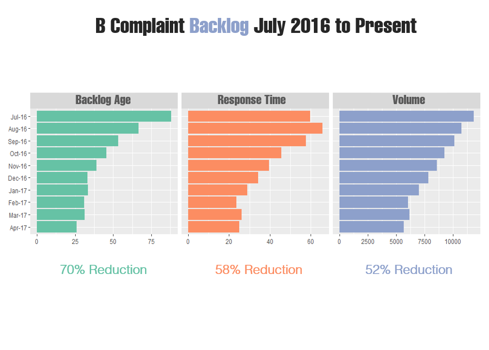
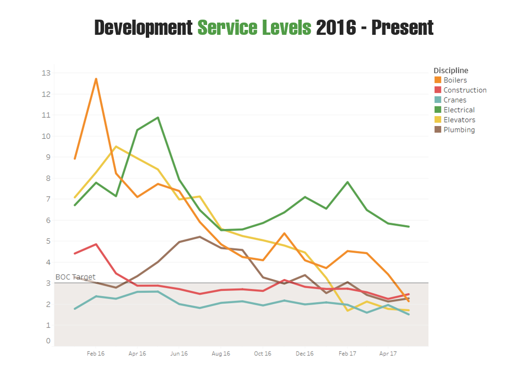
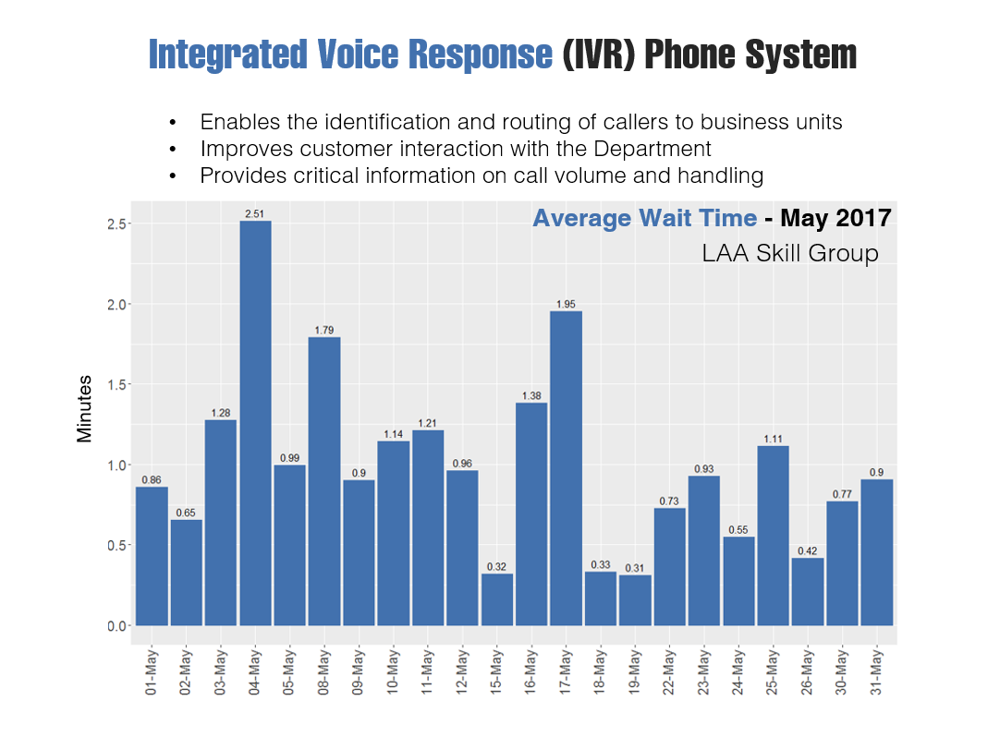
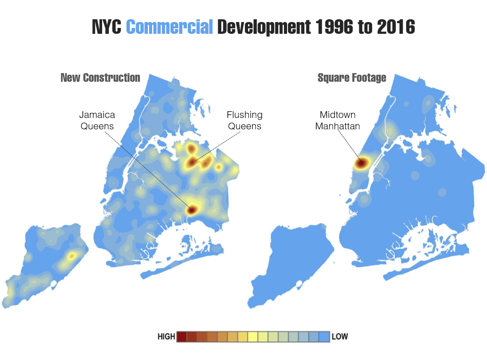
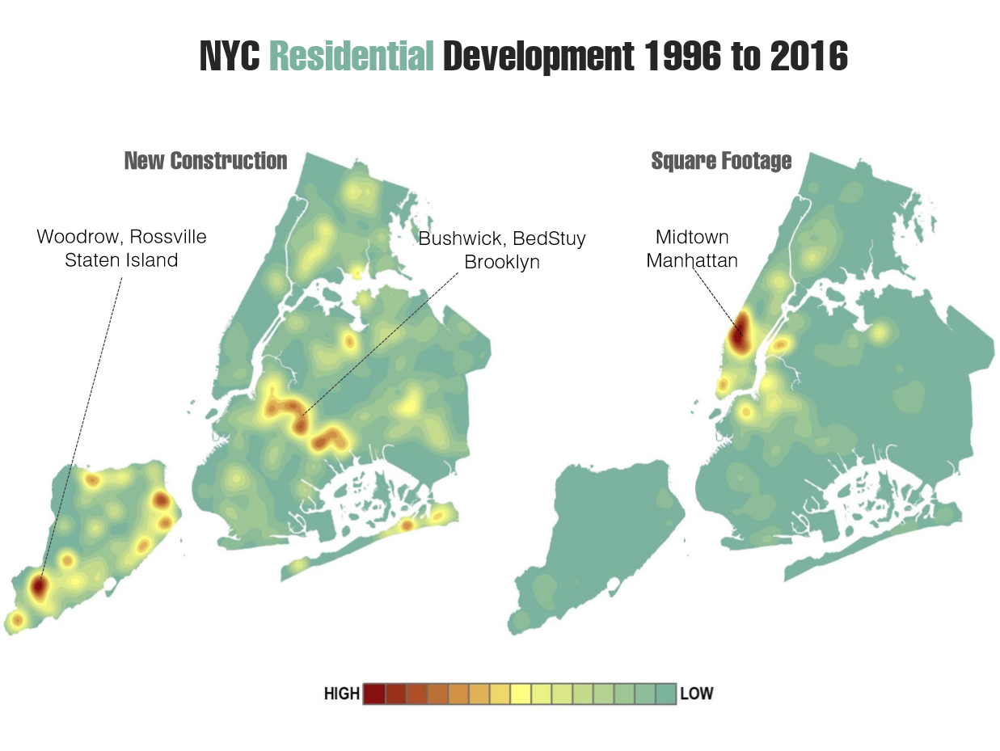
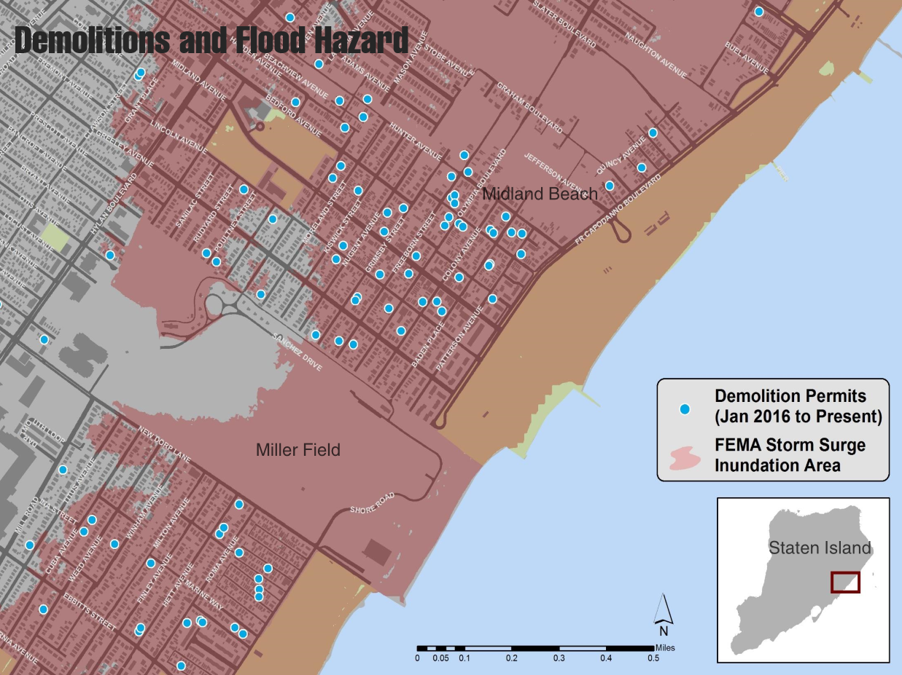
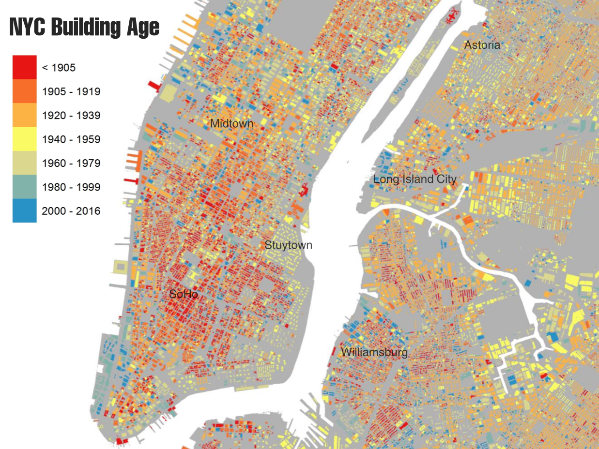
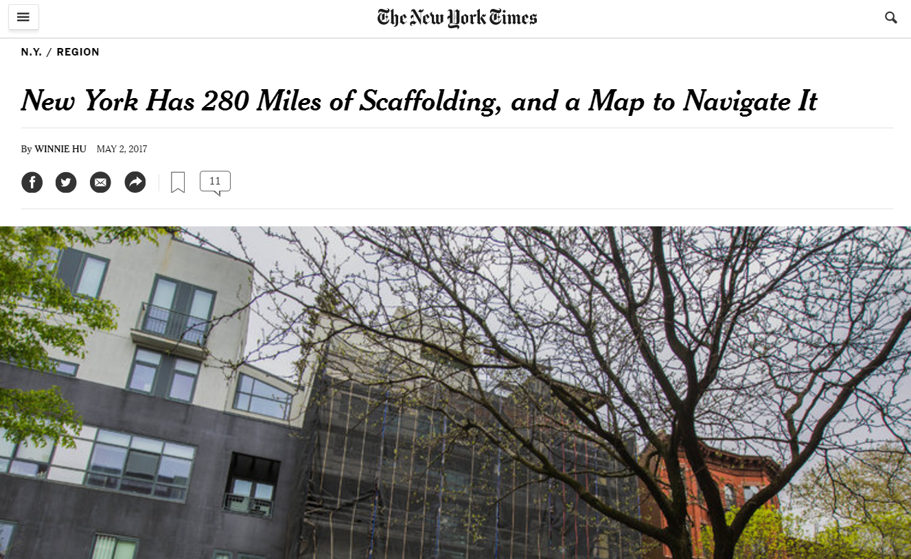

NYC DOBAnalytics and Mapping
DOB has huge volumes of new and historical data:
- Building construction
- Inspections
- Safety & Compliance
DOB is using Analytics and GIS to:
- Measure performance
- Track and monitor trends
- Predict risk
- Improve information flow
Improved Service Levels
B Complaint Backlog
Service Levels
IVR
Tracking Developmentin NYC
Commercial Development
Residential Development
Flood Hazard Area data from FEMA
Building Age
Transparency
Open Data
- Many critical datasets such as filings and permits are publicly available
External Reporting
- Data analysis for the public
NYTIMES Sheds
Thank youand stay tunedmore to come